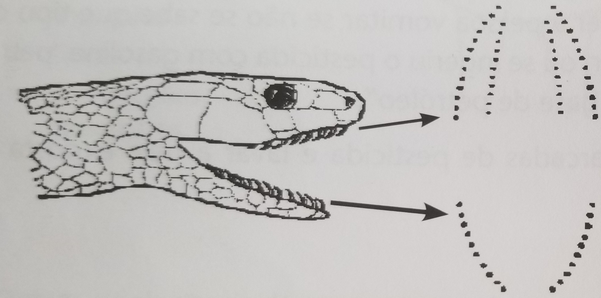
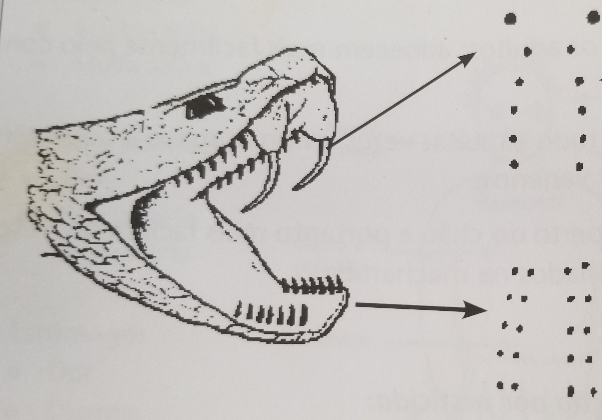

Todas as pessoas que são mordidas por cobras ficam muito assustadas e com medo.
Devem ser levadas com urgência para a unidade sanitária mais próxima.
Existem 2 tipos de cobras:
• As cobras não venenosas, que não possuem presas (dentes grandes que injectam veneno).
• As cobras venenosas, que possuem presas: dentes grandes com cavidades - como se fossem agulhas de injecção – que a cobra venenosa enterra no corpo da vítima para injectar o veneno.
Em muitos países africanos existem cerca de 100 tipos de cobras, das quais não mais 10 são venenosas.
Mordeduras por cobras não venenosas
Existem cerca de 50 tipos de cobras não venenosas. Geralmente, estas apresentam uma cabeça ovalada e olhos arredondados.
A cobra verde africana, é uma cobra não venenosa comum. É de cor verde clara, fina como um dedo e pode medir até 3 metros. Estas cobras vão para perto das casas à procura de lagartos, ratos ou rãs. Elas não são perigosas para as pessoas e quando são vistas, não há necessidade de ter medo delas ou de as matar. Raramente mordem os humanos e se o fazer, os dentes não têm veneno. Deve-se procurar as marcas deixadas pelos dentes da cobra no local da mordedura. Procurar com cuidado, porque por vezes não são fáceis de ver.
Mordeduras por cobras venenosas
Estas constituem, naturalmente, as mordeduras de cobra que podem ser muito perigosas. Em muitos casos, a quantidade de veneno é pequena e não há perigo de vida. Estima-se que em 100 pessoas mordidas cerca de 95 sobrevivem às mordeduras de cobra, mesmo sem tomarem um antiveneno.
Alguns tipos de cobra possuem presas que só causam dor e inchaço ao redor da mordedura, mas o veneno não se alastra para o resto do corpo e, por isso, não constituem perigo de vida.
O envenenamento geral (alastramento do veneno por todo o corpo), pode ocorrer em meia hora, ou levar até alguns dias.
Em Moçambique, as cobras venenosas incluem:
Naja e mamba – o veneno causa fraqueza, dificuldade em manter as pálpebras abertas, ou para engolir, e finalmente paralisia.
Víbora – o veneno causa muita dor e inchaço na zona da mordedura. Raramente, pode causar hemorragia nas gengivas e nos locais das marcas dos dentes e noutros locais.
Cobra das árvores e cobra-pássaro – as presas são recuadas, pelo que é raro morderem. O veneno pode causar hemorragias externas e internas, devido a perturbações no mecanismo de coagulação do sangue.
Em Moçambique, a maior parte das mordeduras são causadas por víboras sopradoras. É uma cobra comum que se movimenta lentamente e que não consegue fugir das pessoas. Por isso, morde para se defender.
Que fazer perante uma mordedura de cobra?
Procurar identificar o tipo de cobra
Perguntar às pessoas se viram a cobra e se a apanharam. Se a cobra foi apanhada, pedir aos familiares, ou vizinhos, para a trazerem. Se não foi apanhada, pedir a descrição e o nome pelo qual a cobra é conhecida localmente (se souberem).
As cobras venenosas podem ser convenientemente devididas em tamanhos e grupos: a comprida, a gorda e a pequena.